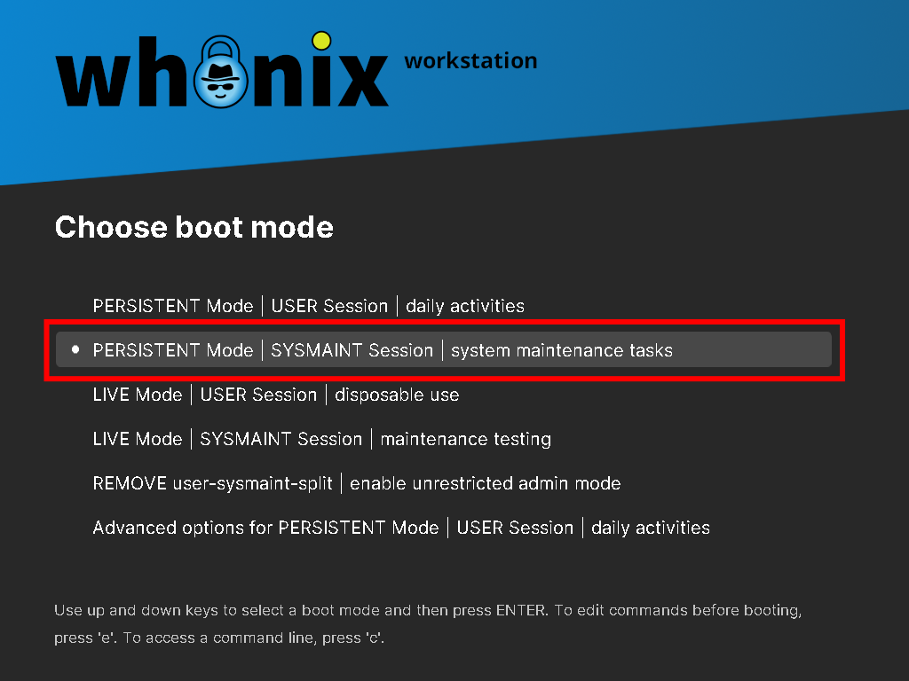
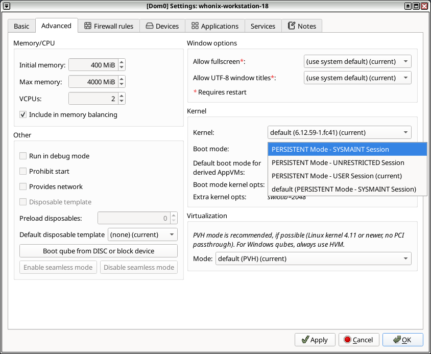

We believe security software like Whonix needs to remain Open Source and independent. Would you help sustain and grow the project? Learn more about our 11 year success story and maybe DONATE!
Install SoftwareDocumentationPrinting and ScanningPrevious page: Install SoftwareIndex page: DocumentationNext page: Printing and Scanningsysmaint - System Maintenance User
- Overview: Whonix specific
sysmaintaccount documentation and default installation status differences. - Default: Whonix LXQt comes with
user-sysmaint-splitby default. - Accounts: There are two accounts:
user: For daily activities.sysmaint: For system maintenance administrative activities, such as installing software or upgrading.
- Security rationale: This is a security feature.
(
 [Broken-ExtLink--no-url-was-provided])
[Broken-ExtLink--no-url-was-provided]) - Administrative access: Boot into the
sysmaintsession. This is the recommended way to perform administrative tasks, to run tools such assudoorpkexec. - Troubleshooting: If you see the following errors, you are
most likely in the
usersession:
permission denied: sudopermission denied: pkexec- Fix: Reboot into the
sysmaintsession and run administrative commands there. - Unrestricted Admin Mode: The opposite of
user-sysmaint-splitis
[Broken-ExtLink--no-url-was-provided], which users can opt in to enable.
This is generally not recommended, because it removes the
security benefits of user-sysmaint-split. - Older versions: For older versions, refer to Version Overview for upgrade information.
Screenshot
Image: Whonix-Workstation - sysmaint Boot Option in GRUB boot menu

Image: Whonix-Workstation - sysmaint Boot Option in Qubes VM Manager (QVMM)

Version Overview
Feature |
Whonix-Workstation LXQt (GUI) |
Whonix-Gateway LXQt (GUI) |
Whonix-Workstation CLI |
Whonix-Gateway CLI |
|---|---|---|---|---|
|
Yes, default in new images. |
Yes, default in new images. |
No, not default. |
No, not default. |
Old Versions |
No, not auto-installed (to avoid breaking workflows). |
No, not auto-installed (to avoid breaking workflows). |
No,
not applicable (remains |
No,
not applicable (remains |
New Images |
Yes,
includes |
Yes,
includes |
No,
does not include |
No,
does not include |
17 to 18 Release Upgrade |
No,
does not auto-install |
No,
does not auto-install |
No,
does not include |
No,
does not include |
Opt-Out |
Yes,
via
|
Yes,
via
|
Yes |
Yes |
Opt-In |
Yes, can be installed anytime. |
Yes, can be installed anytime. |
Yes |
Yes |
user-sysmaint-split - Whonix-Workstation versus Whonix-Gateway - Default Installation Status Differences
In the past, in earlier versions, there have been differences between Whonix-Workstation and Whonix-Gateway. [1] There are no more differences since Whonix 18. [2]
user-sysmaint-split - GUI vs CLI - Default Installation Status Differences
- Default installation status:
user-sysmaint-splitdefault installation status (installed by default versus not installed by default) differs between the graphical user interface (GUI) and command line interface (CLI) versions. - Future direction: In the future, the CLI version will be
improved to be more suitable for servers.
- Server support: Server support for
user-sysmaint-splitis not yet as sophisticated as it is for the GUI version. - Server use cases: For some server use cases,
user-sysmaint-splitmay be less needed or unnecessary. - Further reading: This topic is elaborated in the development
chapter
[Broken-ExtLink--no-url-was-provided].
- Server support: Server support for
Upstream

Redirection to Kicksecure Documentation
- Introduction: <a href="../Introduction/">Whonix Documentation Introduction, User Expectations, Footnotes and References, User Expectations - What Documentation Is and What It Is Not</a>
- <a href="../About/#Based_on_Kicksecure">Whonix is based on Kicksecure™</a>: Whonix is built on top of Kicksecure. This means it uses many of the same security tools, design concepts, and configurations.
- <a href="https://www.kicksecure.com/wiki/Based_on_Debian">Kicksecure is based on Debian</a>: Kicksecure is developed using Debian as its base. Debian is a widely used, stable, and free Linux operating system.
- Inheritance: As a result, Whonix is also <a href="../Based_on_Debian/">based on Debian</a>.
- Debian is GNU/Linux-based: Debian is built using the GNU/Linux operating system. GNU provides essential tools and Linux is the system's kernel (core).
- Shared documentation benefits: Since each system is based on the one below it, a lot of documentation and guides are shared. This reduces the need to duplicate information.
- Inherited documentation: Most instructions and explanations are inherited from Kicksecure or Debian, unless otherwise specified.
- Shared principles: The systems share similar security goals and setup instructions. In most cases, users can follow Kicksecure documentation when using Whonix.
- Keep using Whonix: This does not mean users should switch to Kicksecure. This page only points to related, helpful information.
- Where to apply the instructions: Follow the instructions inside Whonix unless specifically stated otherwise.
- Wiki editors notice: This information is pulled from a reusable wiki template: <a href="../Template:Upstream_wiki/">upstream_wiki</a>. (<a href="../Special:WhatLinksHere/Template:Upstream_wiki/">See which pages use this</a>.)
- Comparison: <a href="../Comparison_with_Kicksecure/">Whonix versus Kicksecure</a>
- Documentation compatibility: Because Whonix is based on Kicksecure, you can often follow Kicksecure's instructions as long as you apply them in the right place.
- Summary: Whonix is built on top of Kicksecure, which itself is based on Debian. Debian is a GNU/Linux operating system. This layered design means Whonix inherits many features, tools, and documentation from both Kicksecure and Debian.
- Click here: Visit the related page in the Kicksecure wiki for full documentation and background:
 [Broken-ExtLink--no-url-was-provided]
[Broken-ExtLink--no-url-was-provided]
- Note: Re-interpretation...
Apply the instructions inside Whonix, not inside Kicksecure.
Kicksecure: Perform these steps inside Kicksecure.
Instead, apply the steps inside Whonix-Workstation.
Kicksecure for Qubes: Perform these steps inside Qubes
kicksecure-18Template.
Instead, use the whonix-workstation-18 Template for
these steps.
Footnotes
Categories: Documentation